4 / 4 완료 (2회 연속)
웹 연동 IK 반복 시험 · 재시도 0회
약 6분 15초
교보재 4개 배치 (6분 15.0초 / 16.2초)
SSAFY 특화PJT 우수상
반 1등 수상
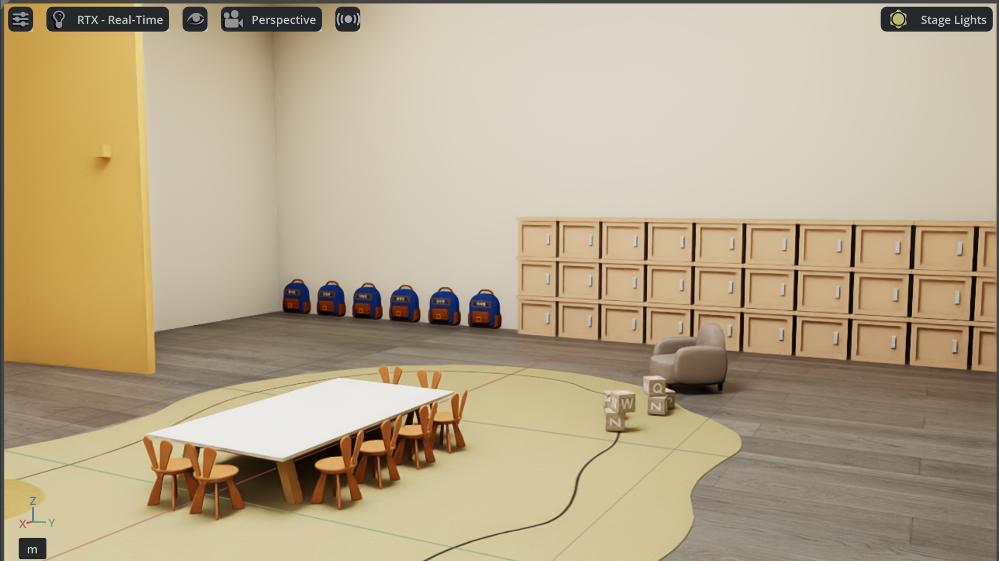
Isaac Sim 기반 어린이집 교실 · 선반 · 테이블 시뮬레이션 환경
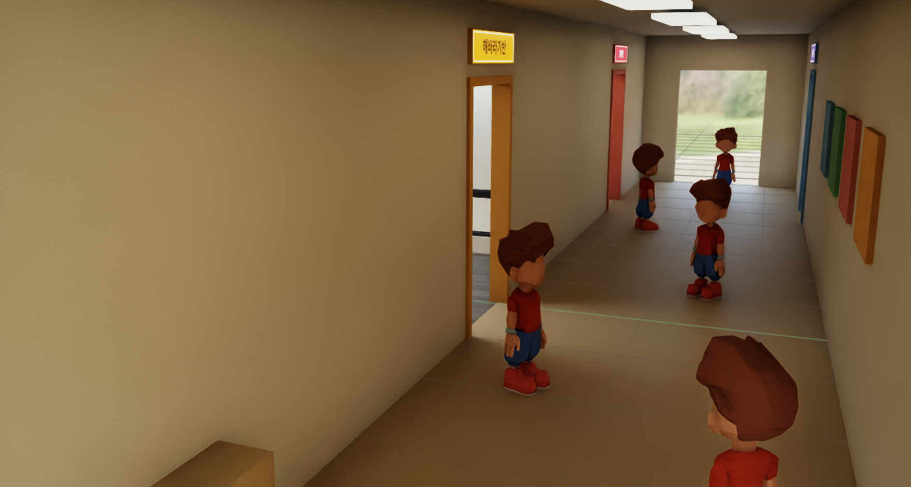
Isaac Sim 어린이집 복도 · 동적 장애물 자율주행 환경
개요
보육 교사의 웹 작업 요청을 자율주행·정밀 도킹·로봇팔 조작으로 연결해 보관 선반 교보재를 수업 테이블 지정 위치에 자동 배치하는 통합 로봇 시스템
기여한 부분 및 성과
- 팀장 · 핵심 구현: 교사 웹(FastAPI·PostgreSQL) 요청을 주행·도킹·조작 모듈로 조율하는 ROS 2
Task
Manager 및 웹 연동 시뮬레이터 구현
- 경로 · 웹 시뮬레이션 연동: Nav2 구간 비용 행렬–OR-Tools 방문 순서 최적화 연동 및 웹
시뮬레이터 지도·경로 플래너·진행 상태 실시간
반영
- 인식 · 배포 인프라: 교보재 YOLO 데이터셋·학습/추론 도구 및 Docker·GitLab CI
파이프라인 구성
- 검증 및 범위 구분: 웹 연동 IK 반복 시험 2회 연속 4/4 완료(약 6분 15초, 재시도 0회) /
실물
SO-101 SmolVLA 시연(데이터 1,433개·Sim-to-Real)은 팀 확장 성과
- 3 -
트러블 슈팅 문제 해결 경험
1. 물품별 왕복 이동 및 반복 도킹 비효율 해소
문제초기 교보재 입력 순서별 선반 왕복으로
매 품목마다 정밀 도킹 반복 → 전체 작업 시간 증가
해결Task Manager 내
동일 선반 물품 연속 수거 순서 재구성 및 OR-Tools 주행 비용 행렬 최적화 연동
결과불필요한 재도킹 절감, 웹 연동
시뮬레이션 기준 약 6분 15초 내 교보재 4개 안정 배치
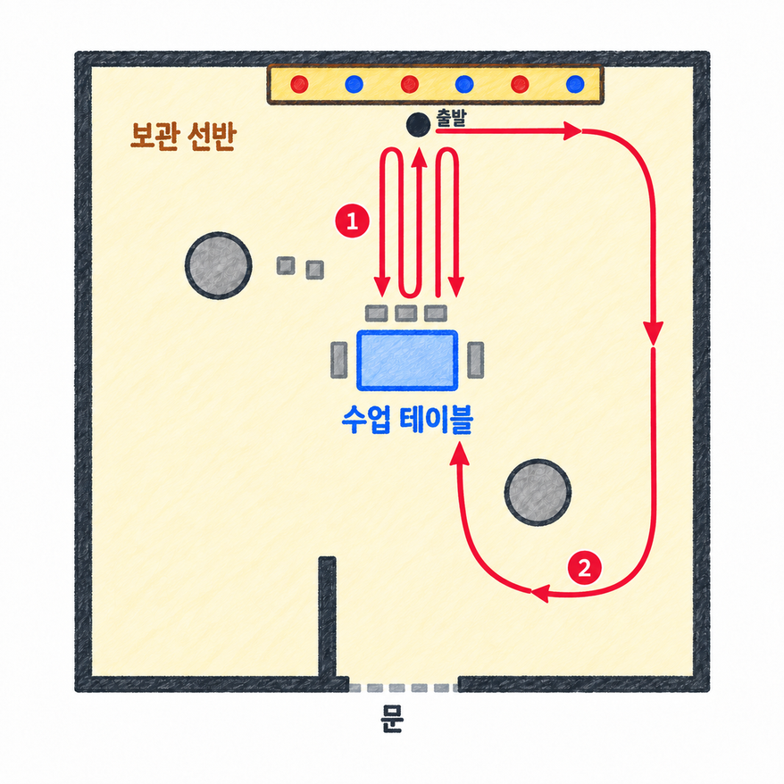
개선 전: 물품별 선반–테이블 왕복 · 반복 도킹 (약 11분)
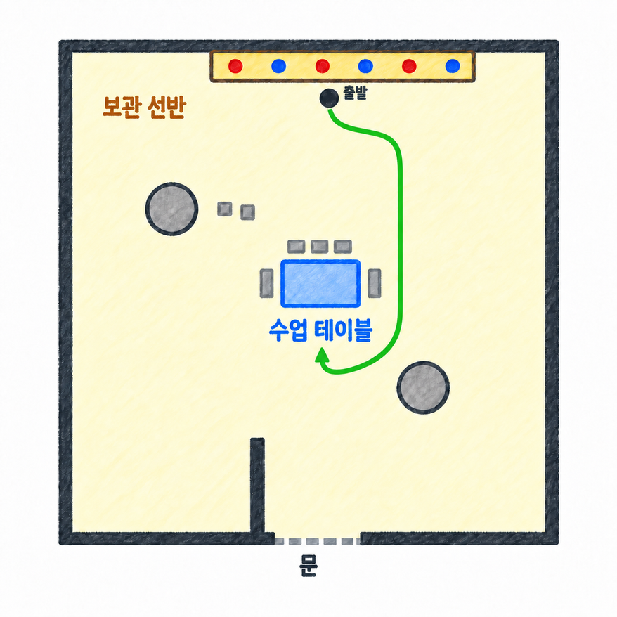
개선 후: 동일 선반 연속 수거 + OR-Tools 경로 최적화 (약 6분)
2. 수거·배치 상태 추적 분리 및 웹 실시간 동기화
문제로봇 바구니 적재와 수업 테이블 안착
완료가 미구분될 경우, 웹 화면에서 작업 누락·중단 단계 판별 불가
해결Task Manager와
FastAPI·PostgreSQL 간 수거 완료·배치 완료 이벤트를 분리 기록하고 웹 진행 상태에 실시간 반영
결과품목별 수거·배치 진행 상태 추적 정합성
확보 및 작업 완료 여부 즉시 확인 가능
사용 기술
Python
ROS 2
Nav2
OR-Tools
Isaac Sim
FastAPI · PostgreSQL
Docker · GitLab CI
- 4 -
3.05초 → 0.97초
LLM→TTS 응답 68.2%↓
SSAFY 공통PJT 우수상
광주 2반 1등 수상
TensorRT FP16 엣지 통합
YOLO26s · ByteTrack · 표지판 모델
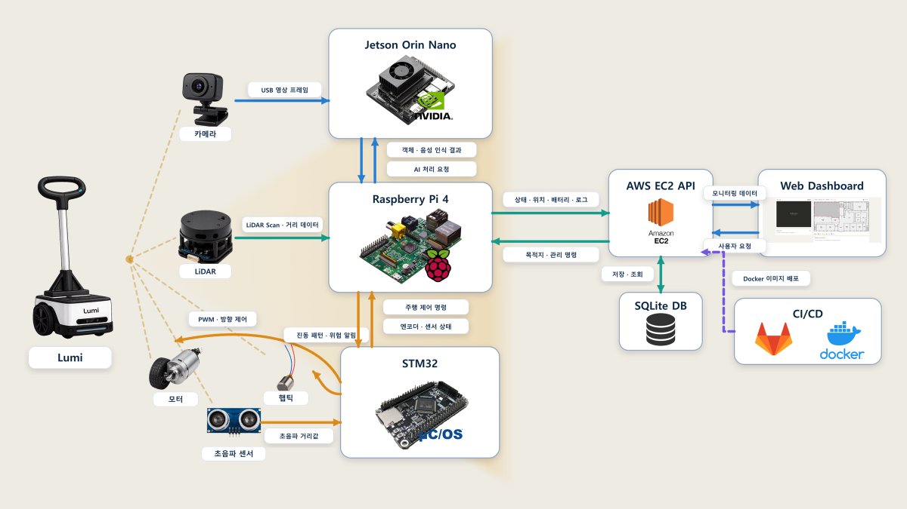
Jetson · RPi4 · STM32 계층별 시스템 아키텍처
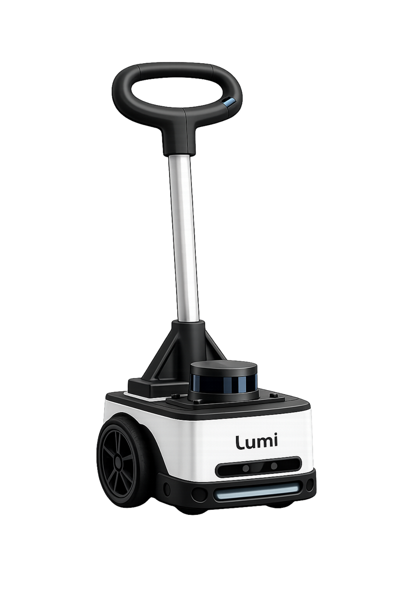
루미 로봇 실물 외형
개요
저시력 보행자의 음성 질의·목적지 요청을 Jetson 엣지 비전·음성 AI Agent로 처리해 ROS 2 주행과 연동하는 실내 보행 보조 로봇
기여한 부분 및 성과
- 엣지 비전: Jetson Orin Nano Super 환경 YOLO26s TensorRT
FP16·ByteTrack 및
청소 표지판 전용 모델(3프레임 주기, 임계값 0.5→0.7 현장 튜닝) 구축
- 음성 AI Agent:
openWakeWord → Silero VAD → Whisper → Gemini Tool Calling → Edge TTS 및 WSS 영상 송신 통합
- 주행 연동 · 지연 개선: 목적지 도구→UDP 브리지→ROS 2 토픽 발행 연동 / STT 결과
Gemini 전송~TTS 전달 구간 지연
3.05초 → 0.97초(68.2%↓)
- 5 -
트러블 슈팅 문제 해결 경험
1. LLM 추론 및 잡음 환경 발화 종료 대기 병목 개선
문제응답 지연 피드백 분석 결과, LLM
과다 thinking 연산 및 실내 소음 속 발화 종료 대기가 주요 병목
해결Gemini thinking
비활성화·출력 256토큰·최근 10메시지 제한 / 적응형 무음 판정 + Silero VAD로 음성 구간만 전사
결과STT 결과 전송~TTS 전달 지연 약
2.08초 단축(3.05초 → 0.97초)
2. 탐지 좌표의 직관적 안내 변환 및 과거 관측 환각 방지
과제픽셀 좌표만으로는 저시력 사용자 안내
한계 / 오래된 탐지가 현재 장애물로 오안내될 위험
구현DetectionStore 내 현재 객체·최근 60초 이력
분리, 좌·정면·우 방향·화면 점유율 거리감·카메라 상태·최신성 함께 전달
결과도구 결과 근거 기반 음성 안내 정합성
확보 및 과거 관측 혼선 차단
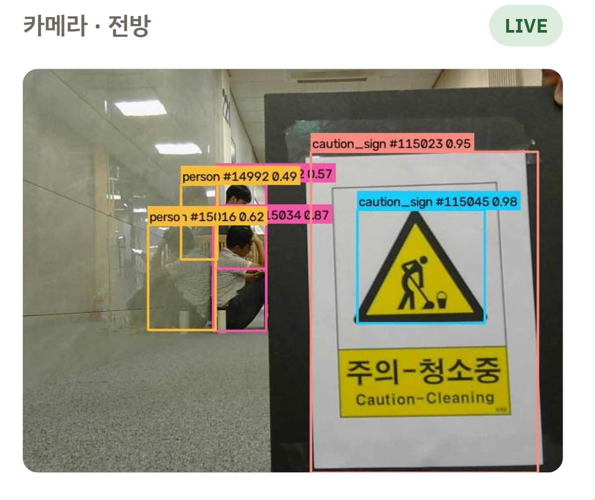
실시간 객체(사람 · 청소 중 주의 표지판) 탐지 및 방향·거리감 변환 기반 화면
사용 기술
Python
YOLO
TensorRT
ByteTrack
Whisper · VAD
LLM Agent
ROS 2
- 6 -
3.82MB → 약 1.7KB
관제 첫 화면 초기 전송량 99.96% 감소
SSAFY 1학기 최우수상
임베디드로봇 트랙 1등 수상
실물 파손 공 약 100개
매장 10곳+ 직접 방문 · 약 300장 학습
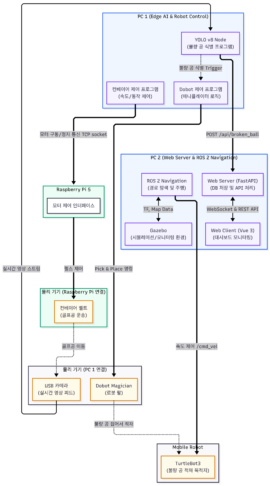
비전·로봇·AMR·웹 연동 구조
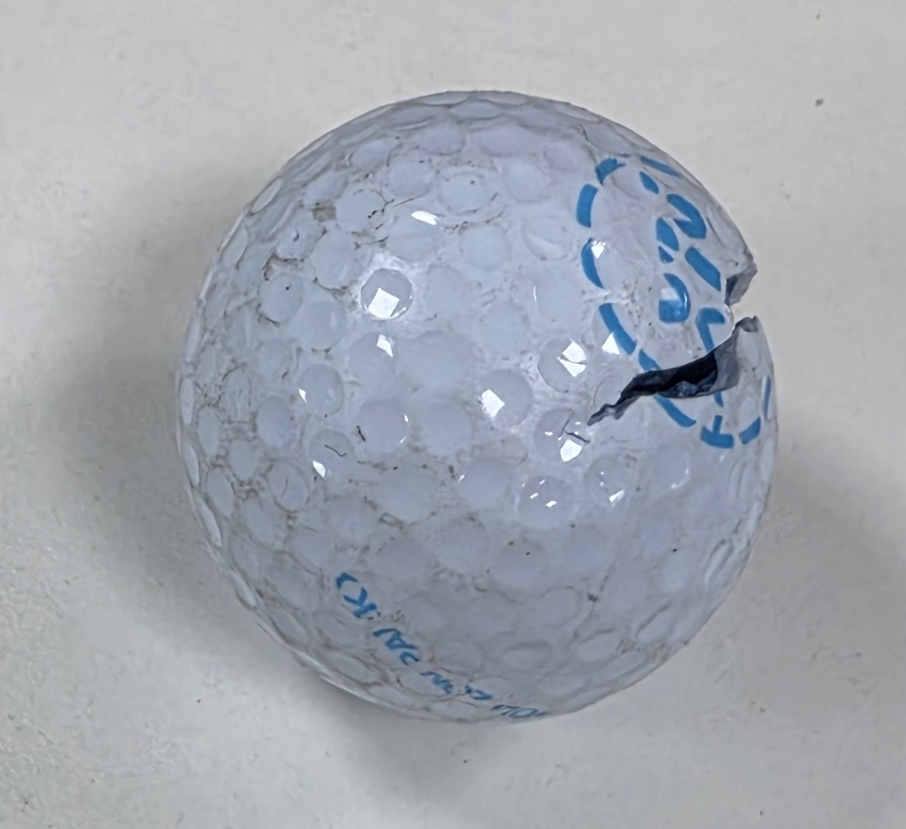
현장 방문 수집 실물 파손 골프공 샘플
개요
스크린골프장 파손 공 현장 수집·비전 검출부터 로봇팔 분류·AMR 운반·웹 관제 및 음성 AI Agent까지 통합한 품질 관리 시스템
기여한 부분 및 성과
- 현장 데이터 · CV: 스크린골프장 10곳+ 직접 방문해 실물 파손 공 약 100개 확보·촬영, 약
300장(7:2:1)으로
YOLO26-small 학습
- 팀장 · 시스템 통합: 웹 관제 백엔드(FastAPI·WebSocket), 음성 Agent, TurtleBot3 AMR(Nav2) 제어, 불량 이력
API 명세 및 전체 통합 담당
- 로봇팔 연동 경계: 컨베이어·Dobot 로봇팔 제어는 팀원 담당, 검출부 불량 판정·바운딩 박스 중심 좌표
전달로 분류·적재 연동
- 7 -
트러블 슈팅 문제 해결 경험
1. 관제 대시보드 초기 로딩 및 네트워크 트래픽 병목 해소
문제첫 화면 진입 시 DB 전체
이력+Base64 이미지(약 3.82MB) 일괄 조회 및 클라이언트 통계 연산으로 로딩 지연
해결목록 API 이미지 제외·페이지네이션
적용, 방·날짜별 통계 서버 집계 및 상세 클릭 시 이미지 Lazy Loading 분리
결과초기 페이지 네트워크 전송량
3.82MB → 약 1.7KB (99.96% 절감)
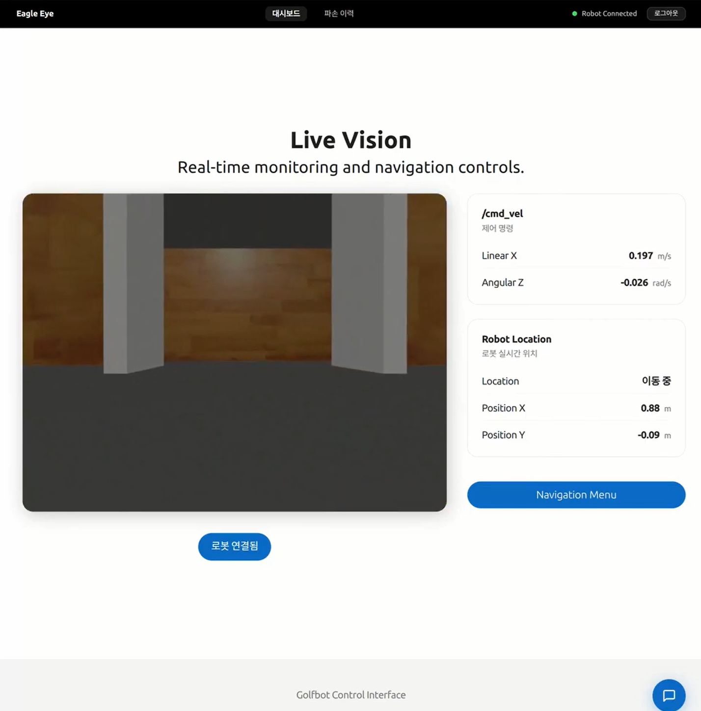
초기 로딩 트래픽을 최적화한 실시간 비전 · 불량 이력 · AMR 통합 웹 관제 대시보드
2. 로컬 LLM 에이전트 추론 지연 개선 (하이브리드 분리)
문제노트북(RTX 4050) 로컬
LLM(Gemma4:e2b) 제어 에이전트 실행 시 평균 30초 이상 추론 지연
해결음성 전사(Faster Whisper
base, CPU INT8)만 로컬 유지, 자연어·Tool Calling 추론은 GPT-4o-mini API로 분리
결과일반 텍스트 응답 2초
이내, STT·복수 제어 도구 호출 포함 응답 7초 이내 단축
사용 기술
Python
YOLO
FastAPI
ROS 2 · Nav2
WebSocket
LLM Agent
- 8 -
INT8 1.87 ms
Jetson Orin Nano 평균 모델 추론
정확도 74.32%
Tiny ImageNet 200클래스 (자체 평가)
GPU 메모리 10.93 MB
Medium(33.98MB) 대비 자원 절감
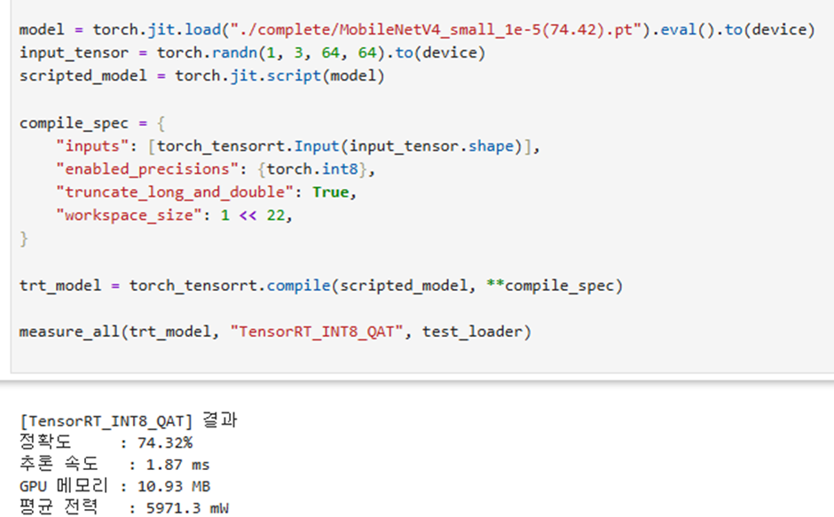
Torch-TensorRT INT8 컴파일 · Jetson Orin Nano 계측 출력
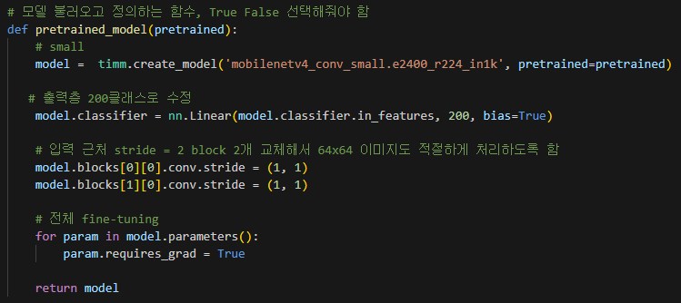
64×64 입력 공간 정보 보존을 위한 앞단 stride 2→1 조정
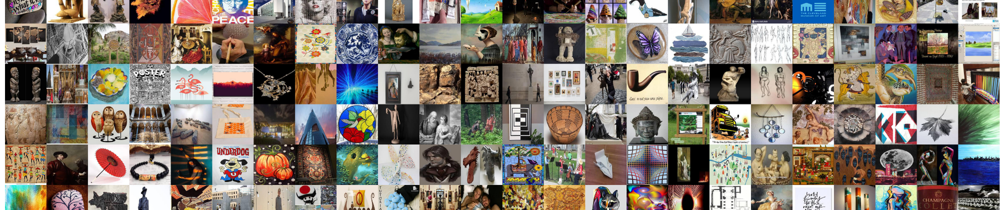
Tiny ImageNet 데이터셋 (64×64 해상도 · 200개 클래스)
개요
Jetson Orin Nano에서 Tiny ImageNet(64×64, 200클래스)을 실시간 분류하기 위한 경량 CNN 설계 및 MobileNetV4 QAT·TensorRT INT8
최적화
기여한 부분 및 성과
- 구조 실험 · 조정: Depthwise Separable Conv 자체 CNN(7→12→8블록) 비교 및 MobileNetV4 앞단 합성곱 2곳
stride 2→1 조정(64×64 공간 정보 보존) 후 전 층 파인튜닝
- INT8 배포 성과: QAT → TorchScript → Torch-TensorRT(INT8) 컴파일,
MobileNetV4-Conv-Small 자체 평가 정확도 74.32% · 평균 모델 추론 1.87
ms(전처리·복사 제외) · GPU 메모리 10.93 MB
- 9 -
트러블 슈팅 문제 해결 경험
1. 정확도·지연·메모리 트레이드오프 기반 배포 모델 선정
문제자체 CNN 8블록(1.12 ms)은
정확도 52.85% 한계 / MobileNetV4-Medium(75.99%)은 지연(2.78 ms)·메모리(33.98 MB) 부담 과다
해결학습 정확도 단독 비교 대신 Jetson
실기체에서 정확도·모델 지연·GPU 메모리·전력 동시 계측 비교
결과Medium 대비 1.67%p 차이로
지연 0.91 ms · 메모리 23.05 MB 절감한 MobileNetV4-Conv-Small 최종 선정
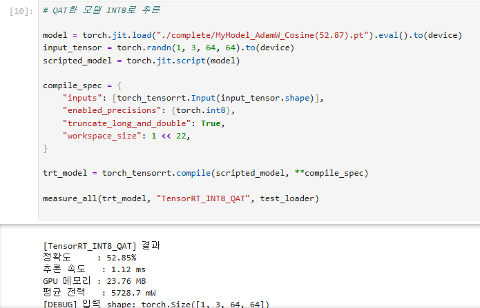
자체 CNN 8블록 INT8 실측 (정확도 52.85% · 1.12 ms · 23.76 MB)
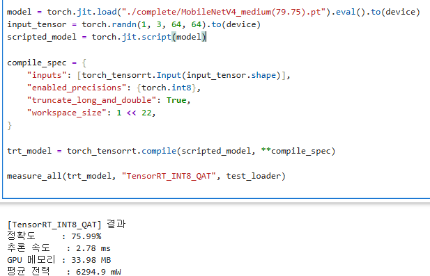
MobileNetV4-Medium INT8 실측 (정확도 75.99% · 2.78 ms · 33.98 MB)
2. QAT 단계 정확도와 실기체 TensorRT INT8 순위 불일치 검증
문제학습률 1e-5
vs 5e-5 비교 시 QAT 정확도 순위(74.42% vs 75.06%)가 실측 TensorRT INT8 순위(74.32% vs
74.27%)와 역전
해결QAT 수치만으로 판단하지 않고
Torch-TensorRT 컴파일 INT8 엔진을 Jetson 장치에서 직접 재평가
결과실기체 INT8 기준 우위인
1e-5 모델 최종 채택
사용 기술
Python
PyTorch
TensorRT
QAT
Jetson Orin Nano
- 10 -
 YOLO
YOLO TensorRT
· QAT
TensorRT
· QAT LangChain ·
LLM Agent
LangChain ·
LLM Agent MQTT (Paho)
MQTT (Paho)